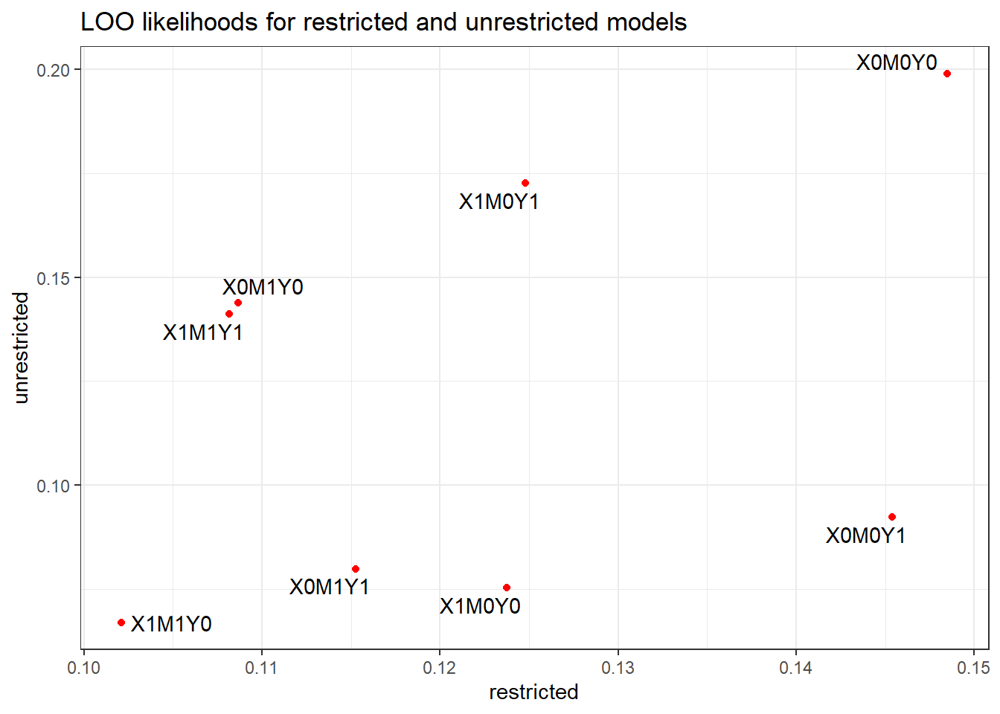
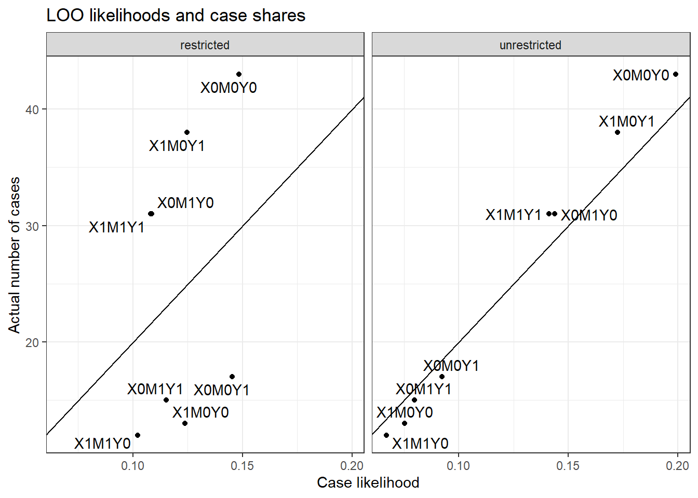
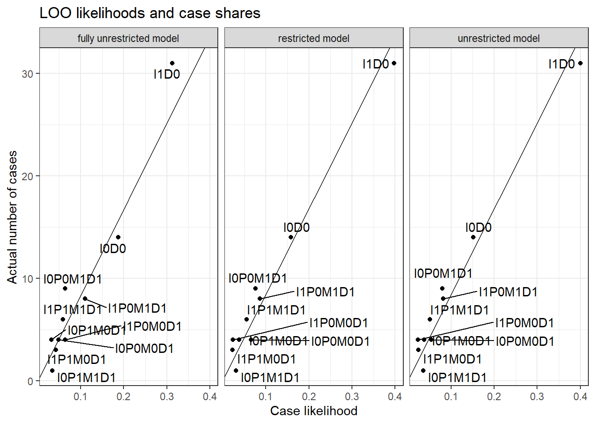

Chapter 16 Evaluating models
Model based inference takes the model seriously. But deep down we know that all of these models are wrong, in myriad ways. We examine strategies for figuring out whether a model is likely doing more harm than good.
Throughout this book we have maintained the conceit that you believe your model. But it is also obvious that even the most non-parametric-seeming models depend on substantive assumptions and that these are almost certainly wrong. The question then is not how much you believe your model (or whether you really believe what you say you believe) but whether your model is useful is some sense. How can we evaluate the usefulness of our models?
16.1 Four Strategies
Sometimes a model is just a poor representation of underlying causal processes. Fortunately it can sometimes be possible to figure out your model is sending you in the wrong direction. We describe five strategies.
Imagine a situation in which researchers believe that the effect of \(X\) on \(Y\) runs entirely through \(M\), positing a model of the form \(X \rightarrow M \rightarrow Y\). Imagine, however, that the true causal process is one in which \(X\) affects \(Y\) directly; \(X\) has no effect on \(M\), so that there is no indirect effect of \(X\) on \(Y\); and \(M\) never has a negative effect on \(Y\).
The problem with the posited model, then, is that it represents overly strong beliefs about independence relations: it does not allow for a direct effect that is in fact operating.
We are perfectly able to update using this too-strong \(X \rightarrow M \rightarrow Y\) model and the data — but the updated model can produce wildly inaccurate causal inferences. We show this using set of 200 observations simulated from a “true” model with direct effects only and an average effect of \(X\) on \(Y\) of \(1/3\).72 In the left panel of Figure 16.1, we show the estimated average treatment effect of \(X\) on \(Y\) when using these data to update the \(X \rightarrow M \rightarrow Y\) model.
In the righthand panel of the figure, we show the inferences using the same data but a model that makes weaker assumptions by allowing for direct effects: a \(X \rightarrow M \rightarrow Y \leftarrow X\) model. With both models, we start with flat priors over nodal types.73
We represent the true average effect with the vertical line in each graph.
As we can see, the weaker (i.e., more permissive) model performs OK: the true effect falls well within the posterior predictive distribution on the ATE. However, the stronger model, which excludes direct effects, generates a posterior predictive distribution that essentially excludes the right answer. So, if we go into the analysis with the stronger model, we have a problem.
But will we notice?
In the remainder of this section, we explore a range of diagnostics that researchers can undertake to evaluate the usefulness of their models or to compare models with one another: checking assumptions of conditional independence built into a model; checking the model’s fit; using “leave-one-out” cross-validation; and assessing model sensitivity.
Figure 16.1: A restricted model yields a credibility interval that does not contain the actual average effect.
16.1.1 Check conditional independence
First, even before engaging in updating, we can look to see whether the data pattern is consistent with our causal model. In particular, we can check whether there are inconsistencies with the Markov condition that we introduced in Chapter 2: that every node is conditionally independent of its non-descendants, given its parents. In this case, if the stronger model is right, then given \(M\), \(Y\) should be independent of \(X\).
Is it?
One way to check is to assess the covariance of \(X\) and \(Y\) given \(M\) in the data. Specifically, we regress \(Y\) on \(X\) for each value of \(M\), once for \(M=1\) and again for \(M=0\); a correlation between \(X\) and \(Y\) at either value of \(M\) would be problematic for the conditional independence assumption embedded in the stronger model.
Note that this form of diagnostic test is a classical one in the frequentist sense: we start by hypothesizing that our model is correct and then ask whether the data were unlikely given the model.
| M | estimate | std.error | p.value |
|---|---|---|---|
| 0 | 0.262 | 0.097 | 0.008 |
| 1 | 0.280 | 0.095 | 0.004 |
We report the regression coefficients on \(X\) in the table below. It is immediately apparent that we have a problem. At both values of \(M\), there is a strong correlation between \(X\) and \(Y\), evidence of a violation of the Markov condition implied by the stronger model.74
Identifying the full set of conditional independence assumptions in a causal model can be difficult. There are however well developed algorithms for identifying what sets, if any, you need to conditional on to ensure conditional Independence between two nodes given a DAG. R users can quickly access such results using the impliedConditionalIndependencies function in dagitty package.
16.1.2 Bayesian \(p-\)value: Are the data unexpected given your model?
A third approach asks whether features of the data you observe are in some sense unusual given your model, or more unusual given your model than another model. For instance, if one model assumed no adverse effects of \(X\) on \(Y\) and no confounding, then a strong negative correlation between \(X\) and \(Y\) would be unusual, even for the model updated with this data; and this negative correlation would more unusual for this model than for a model that allowed for adverse effects.
In fact, this approach is quite classical: we are looking to see whether we should “reject” our model in light of inconistent data.
An approach for doing this using simulated data from the posterior predictive distribution is described in Gabry et al. (2019).75
We consider two test statistics, comparing our stronger to our weaker model. First, we look just at the distribution of the outcome \(Y\) to see how the actual distribution in the data compares to the predicteddistribution from the updated model. Second, we look at the actual correlation between \(X\) and \(Y\) and see how this compares to the predicted distribution. In both cases we calculate a two sided \(p\)-value by assessing and doubling the share of the mass of the predictive posterior distribution that lies on the more extreme side of the observed data. If the observed data were at the mean of the predicive distribution, then we would have a \(p\)-value of 1. If it were at the 95th percentile we would have a \(p\)-value of 0.10. (We note that in this straightforward calculation we assess the probability of the data given the same model that generated the data; approaches could also be used that seek out-of-sample estimates of the probability of observing the observed data.)
For the first test, we see that the predicted distribution of the outcome \(Y\) is similar for both updated models; and the actual mean outcome is within the distribution of predicted mean outcomes. The \(p\)-values for the stronger (0.11) and weaker models (0.14) suggest that the observed mean \(Y\) values are about equally likely for both models.
When it comes to the correlation between \(X\) and \(Y\), however, the two models perform very differently. The posterior predictive distribution from the stronger model is centered around a \(0\) correlation and does not even extend out as far as the observed correlation. The resulting \(p\)-value is 0, meaning that from the perspective of the stronger model the \(X,Y\) correlation in the data is entirely unexpected. A frequentist looking at the observed correlation between \(X\) and \(Y\) should feel comfortable rejecting the stronger model. The updated weaker model, in contrast, predicts a strong correlation, and the observed correlation is comfortably within the posterior predictive distribution, with a \(p\)-value of 0.08.
At first blush, the abysmal performance of the stronger model may seem paradoxical. Even after this model has seen the \(X,Y\) correlations in the data, the model still finds those correlations highly surprising. What keeps the \(X \rightarrow M \rightarrow Y\) model from learning, however, is the strength of the assumptions it contains. The problem is that \(M\) is uncorrelated with \(X\) in the true data-generating process, so the stronger model learns that there is no indirect effect. But, at the same time, this model does not allow for a direct effect. Despite what would seem to be overwhelming evidence of a systematic \(X,Y\) correlation, a causal relationship connecting \(X\) to \(Y\) remains extremely unlikely given the \(X,M\) data pattern and the impossibility of direct effects. The stronger model just can’t handle the truth. The weaker model, on the other hand, readily learns about the direct \(X \rightarrow Y\) effect.

16.1.3 Leave-one-out (LOO) cross-validation
A further class of model-validation methods involves cross-validation. Rather than asking how well the updated model predicts the data used to update it, cross-validation uses the data at hand to estimate how well the model is likely to predict new data that have not yet been seen. One way to do this is to split the available data, using one subsample to update and then assessing predictions using the other subsample. We focus here, however, on approaches that use all of the available data to estimate out-of-sample predictive performance.
One such approach is the “leave-one-out” (LOO) algorithm. In a LOO approach, we update the model using all data points except for one and then ask how well the model performs in predicting the left-out observation. We repeat this for every data point in the dataset to assess how well we can predict the entire dataset.
Often, the LOO approach is used to predict a particular outcome variable. In a framework, however, we are interested in predictions over the joint realization of all nodes, not just a single “outcome.” Thus, we calculate the posterior probability of each data point, using the model updated with all of the other observations.

plot_loo <- function(models)
lapply(models, function(m)
data.frame(
case_likelihood = m$case_likelihood %>% unlist,
label = m$data$event,
count = m$data$count)
) %>% bind_rows(.id = "model") %>%
filter(count > 0) %>%
ggplot(aes(case_likelihood, count, label = label)) + geom_point()+
xlab("Case likelihood") +
ylab("Actual number of cases") + facet_grid(~model) + theme_bw() +
geom_abline(slope = models[[1]]$data$count %>% sum,intercept = 0) +
ggrepel::geom_text_repel() + theme_bw() +
ggtitle("LOO likelihoods and case shares")
list(restricted = loo_restricted, unrestricted = loo_unrestricted) %>% plot_loo
The LOO estimate of out-of-sample predictive fit, for a dataset with \(n\) observations, is then:
\[\prod_1^np(y_i|y_{-i}, \text{model})\] where \(y_{-i}\) is the data pattern with observation \(y_i\) left out, and \(y_i\) represents the values of all nodes of interest for observation \(i\).
We implement LOO cross-validation of the stronger and weaker models using 200 observations generated from the same data-generating model employed above. We find that the LOO likelihood of the data under the stronger model is 1.64e-182 while the likelihood is 4.33e-175 under the weaker model. Thus, the weaker model represents an estimated improvement in out-of-sample prediction on the order of 2.64e+07.
We can visualize the pattern in Figure ??, where we plot the likelihood of each possible data type under the stronger model against the likelihood of that data type under the weaker model. Looking at the scales of the two axes—which is much more compressed on the horizontal than on the vertical—one can see that the stronger model is not able to differentiate as much across the data types as the weaker.
Notably, the stronger model is not able to “learn” from the data about the (in fact, operative) relationship between \(X\) and \(Y\). We can see that, for any given \(X, M\) combination, the two possible values of \(Y\) are predicted with essentially the same likelihood. The stronger model also seems to have “learned” from chance correlations in the data that different values \(X,M\) combinations are differentially likely—even though they are uncorrelated under the true model. The weaker model, on the other hand, basically divides the data types into two groups: those with a positive \(X,Y\) correlation and those with a negative \(X,Y\) correlation and has correctly (given the true model) learned that the former is more likely than the latter.
In Figure ??, we then see how the likelihoods of each data type line up with the actual count of each data type. As we can see, the weaker model updates to likelihoods that fit the actual data pattern well while the stronger model does not, in particular the stronger model under predicts cases that are on the diagnonal and over predicts cases that are off it.
We can also turn the tables and imagine that the stronger model represents the true data-generating process. We implement LOO cross-validation of the two models using 200 data points generated from the stronger model. In Figure 16.2, we see a comparison of the likelihoods of the data types under the two updated models and note that they are extremely similar. This represents an important asymmetry: the model that makes weaker assumptions performs far better in handling data generated by a “stronger” true model than does the stronger model in learning about a process that violates one of its assumptions. Since the weaker model allows for both direct and indirect effects, the weaker can learn about the parameters of the true process in the first situation; but the strong model cannot do so in the second situation because it has by assumption ruled out a key feature of that process (the direct effect).
Figure 16.2: Data prediction of a restricted and unrestricted model when in fact the data is generated by the unrestricted (stronger) model
While it is difficult to see this in Figure XXXX, the stronger model still performs better here than the weaker model. The likelihood of the data under the stronger model is now 3.57e-119, compared to the likelihood of 1.04e-124 under the weaker model. Thus, the weaker model represents an estimated loss to out-of-sample prediction on the order of 2.91e-06. This is not surprising insofar as the stronger model precisely models the data-generating process while the extra parameters in the weaker model allow for “learning” from chance features of the data.
These examples display features of estimation of out-of-sample prediction accuracy familiar from a regression context. In a regression framework, adding parameters to a model may improve fit to sample—generating gains to out-of-sample prediction accuracy when the new parameters pick up systematic features of the data-generating process—but run a risk of over-fitting to chance pattenrs in the data. Similarly, in a structural-causal-model framework, for a model with weaker assumptions and more parameters. We saw that the weaker model performed much better when the true process involved direct effects since the extra parameters, allowing for direct effects, captured something “real” going on. But the same model performed slightly worse than the stronger model when there were no direct effects to pick up, such that the extra parameter could only model noise.
16.1.4 Sensitivity
The last approach we consider brackets the question of which model is better and asks, instead: how much do your conclusions depend on the model? You can worry less about your assumptions if the conclusions are not strongly dependent on them.
To illustrate using a process tracing example, consider a situation in which we are unsure about posited parameter values: that is, about the probability of particular effects at particular nodes. It is likely to be the case in many research situations that we are considerably uncertain about how to quantify intuitive or theoretically informed beliefs about the relative likelihood of different effects.
Suppose, for instance, that we begin with an \(X \rightarrow M \rightarrow Y\) model. And suppose, further, that we believe that it is unlikely that \(M\) has an adverse effect on \(Y\). But we are not sure how unlikely that adverse effect is. (We assume all other modal types are equally likely.) Finally, say that we want to use the observation of \(M\) to draw an inference about whether \(X=1\) caused \(Y=1\) in an \(X=Y=1\) case.
How much does our inference on \(X\)’s effect on \(Y\)—when we see \(M=0\) or \(M=1\)—depend on this second stage assumption about the probability of a negative \(M \rightarrow Y\) effect?
We answer the question by looking at posterior beliefs for a range of possible values for the relevant parameter, \(\lambda^Y_{10}\). In Table REF, we examine a range of values for \(\lambda^Y_{10}\), from 0 to 0.25 (full parity with other types). For each parameter value, we first show the resulting prior belief about the probability that \(X=1\) caused \(Y=1\). We can see that, before we observe \(M\), we think that a positive \(X \rightarrow Y\) effect is more likely as a negative \(M \rightarrow Y\) effect is more likely. This stands to reason since a negative second-stage effect is one possible process in which a positive \(X \rightarrow Y\) effect might occur. And higher values for \(\lambda^Y_{10}\) come disproportionately at the expense of types under which \(X\) cannot affect \(Y\).76
In the next two columns, we show the posterior belief we arrive at when we observe \(M=0\) and then \(M=1\), for each \(\lambda^Y_{10}\) assumption. Looking at the last column first, we see that our inference from \(M=1\) does not depend at all on our beliefs about adverse \(M \rightarrow Y\) effects. The reason is that, if we see \(M=1\), we already know that \(M\) did not have a negative effect on \(Y\), given that we also know \(Y=1\). Our beliefs are purely a function of the probability that there are positive effects at both stages as compared to the probability of other causal types that could yield \(X=M=Y=1\), a comparison unaffected by the probability of a negative \(M \rightarrow Y\) effect.
Our inferences when \(M=0\), on the other hand, do depend on \(\lambda^Y_{10}\): when we see \(M=0\), our belief about a positive \(X \rightarrow Y\) effect depends on the likelihood of negative effects at both stages. We see, then, that the likelier we think negative effects are at the second stage, the higher our posterior confidence in a positive \(X \rightarrow Y\) effect when we see \(M=0\).
| \(\lambda^Y_{10}\) | Prior | \(M=0\) | \(M=1\) |
|---|---|---|---|
| 0.00 | 0.1667 | 0.0000 | 0.25 |
| 0.05 | 0.1833 | 0.0682 | 0.25 |
| 0.10 | 0.2000 | 0.1250 | 0.25 |
| 0.15 | 0.2167 | 0.1731 | 0.25 |
| 0.20 | 0.2333 | 0.2143 | 0.25 |
| 0.25 | 0.2500 | 0.2500 | 0.25 |
Even though our inferences given \(M=1\) do not depend on \(\lambda^Y_{10}\), the amount that we update if we see \(M=1\) does depend on \(\lambda^Y_{10}\). This is because \(\lambda^Y_{10}\) affects our belief, prior to seeing \(M\), that \(X=1\) caused \(Y=1\). Working with a low \(\lambda^Y_{10}\) value, we start out less confident that \(X=1\) caused \(Y=1\), and thus our beliefs make a bigger jump if we do see \(M=1\) than if we had worked with a \(\lambda^Y_{10}\) higher value.
However, to the extent that we want to know how our assumptions affect our conclusions, the interesting feature of this illustration is that sensitivity depends on what we find. The answer to our query is sensitive to the \(\lambda^Y_{10}\) assumption if we find \(M=0\), but not if we find \(M=1\). It is also worth noting that, even if we observe \(M=0\), the sensitivity is limited across the range of parameter values tested. In particular, for all \(\lambda^Y_{10}\) values below parity (0.25), seeing \(M=0\) moves our beliefs in the same direction.
We can use the same basic approach to examine how our conclusions change if we relax assumptions about nodal-type restrictions, about confounds, or about causal structure.
We also note that in cases in which you cannot quantify uncertainty about parameters you might still be able to engage in a form of “qualitative inference.” There is a literature on probabilistic causal models that assesses the scope for inferences when researchers provide ranges of plausible values for parameters (perhaps intervals, perhaps only signs, positive negative, zero), rather than specifying a probability distribution. For a comprehensive treatment of qualitative algebras, see Parsons (2001). Under this kind of approach, a researcher might willing to say that they think some probability \(p\) is not plausibly greater than .5, but unwilling to make a statement about their beliefs about where in the \(0\) to \(0.5\) range it lies. Such incomplete statements can be enough to rule our classes of conclusion.
16.2 Evaluating the Democracy-Inequality model
16.2.1 Check assumptions of conditional independence
Our model presupposes that \(P\) and \(I\) are independent and that \(P\) and \(M\) are independent. Note that the model is consistent with the possibility that, conditional on \(D\), there is a correlation betwen \(M\) and \(P\) or between \(I\) and \(P\), as \(D\) acts as a collider for these pairs of nodes.
To test these assumptions, we in fact need to depart from the dataset drawn from Haggard, Kaufman, and Teo (2012) because these authors only examined cases in which \(D=1\), those that democratized. Thus, we cannot use these data to assess the relationships not conditional on \(D\) or conditional on \(D=0\). We generate observations on all four nodes for a broader set of cases by pulling together measures from the following sources, with the aim of modeling democratization that occurred between 1990 and 200077:
Inequality: We measure inequality, \(I\), using the Gini estimates from the University of Texas Inequality Project (Galbraith (2016)). As we want to measure inequality at the beginning of the period, we take the Gini measure for each country that is closest in time to the year 1989. We then dichotomize the variable using the median value for the period as a cutoff.
Mobilization: We measure \(M\) using the Mass Mobilization Protest Data from Clark and Regan (2016). To capture the kinds of mobilization on which redistributive theories of democratization focus, we restrict our focus to protests in the demand categories “land farm issue,” “labor wage dispute,” “price increases, tax policy,” and “political behavior, process.” We also include only those gatherings with a size of at least 1000 protesters. We code a country case as \(M=1\) if and only if, during the 1990s, it experienced at least one protest that meets both the demand-type and size criteria.
Pressure: We draw on the GIGA Sanctions Dataset to measure international pressure, \(P\). Specifically, we code a country case as \(P=1\) if and only if the country was the target of democratization-focused sanctions during the 1990-2000 period.
Democratization: We use dichotomous democracy measures from G. Cheibub J. and Vreeland (2010), in two ways. First, we filter countries such that our sample includes only those that were not democracies in 1990 (\(N=77\)). We then use the democracy measure for the year 2000 to determine which countries democratized, coding as \(D=1\) those and only those cases that Cheibub and Vreeland code as democracies in that year.
We check the model’s assumptions in relation to conditional independencies through a set of simple regression models, displayed in Table 16.3. In the first two rows, we examine the simple correlation between \(P\) and \(I\) and between \(P\) and \(M\), respectively. We can see from the estimates in the first row that the data pattern is consistent with our assumption of unconditional independence of \(I\) and \(P\). However, we also see that there is an unconditional correlation between \(I\) and \(M\), something that is excluded by our model.
| Correlation | Given | estimate | std.error | p.value |
|---|---|---|---|---|
| P,I | - | 0.000 | 0.114 | 1.000 |
| P,M | - | 0.291 | 0.131 | 0.029 |
| P,I | M = 0 | -0.220 | 0.111 | 0.053 |
| P,I | M = 1 | 0.467 | 0.260 | 0.098 |
We can dig a little deeper, however. The model also implies that \(P\) should be independent of \(I\) given \(M\) — since \(D\) blocks all paths between \(P\) and either \(I\) or \(M\). We test these assumptions in rows 3 and 4 of the table, wgere we examine the conditional independence of \(P\) and \(I\) given \(M=0\) and given \(M=1\). Here the evidence is also troubling for our model, as we see a relatively strong negative correlation between \(P\) and \(I\) when \(M=0\), and positive correlation when \(M=1\).
While we cannot identify the correct model from this data pattern, one possible explanation could be that pressure has a direct effect on mobilization, making mobilization the product of inequality and pressure jointly.78 A model with an arrow running from \(P\) to \(M\) would make the model consistent with the unconditional correlation between these two variables, the conditional correlation between \(P\) and \(I\) given \(M\) (since \(M\) would now be a collider for \(I\) and \(P\)), as well as the unconditional independence of \(I\) and \(P\). A possible way forward — which we do not pursue here — would be to now amend the model and evaluate the revised model against an independent set of data.
16.2.2 Bayesian \(p\)-value
We turn next to evaluating the democratization model using the Bayesian \(p-\)value approach, and for this purpose can return to the data that we coded from Haggard, Kaufman, and Teo (2012)’s qualitative vignettes. In the two panels of Figure @ref(fig:ch15pvalue_pimd), we plot the posterior predictive distributions from our updated model for two quantities of interest: the outcome \(D\) and the correlation between \(I\) and \(M\). In each graph, we indicate with a vertical line the mean value for these quantities for the data at hand and report the \(p-\)value: the probability of the observed data conditional on our model.
As we can see both visually and from the \(p-\)values, the model performs well here as the data that we observe are not at all unexpected under the model.
16.2.3 LOO validation
Turning to “leave one out” model assessment, we now consider comparing our base model to models that make weaker assumptions. In one alternative model, we drop the assumption of monotonicity of \(M\) in \(I\). We also test a maximally flexible model (given the DAG) in which we make no montonocity assumptions for any of the causal effects.
(#fig:loo_pimdplots)C

Figures @ref(fig:loo_pimdplots) shows that in fact the likelihoods of the most restricted and least restricted model are not very different from each other. Both models are able to re-create the data structure reasonably well. Figure @ref(fig:loo_pimdloocomp), confirms this, showing the relationship, for each model, of the likelihood of each data type against the number of cases of that data type in the data. A data type is here defined as a possible combination of realized values on all nodes (\(I, P, M\) and \(D\)). In each plot, the diagonal line represents equality between the proportion of expected cases under the model and the proportion of actual cases. Just eyeballing the relationships, it appears as though the two stronger models might be performing better than the fully unrestricted model.
More formally, we calculate the LOO likelihood for each model as 1.02e-73 for the model with monotonicity assumptions throughout, 1.98e-74 for the model that relaxes the monotonicity assumption for \(I \rightarrow M\), and 7.06e-74 for the model with no monotonicity assumptions at all. In other words, we see that the most restricted model (with all montonicity assumptions) performs best, by about an order of magnitude, followed by the completely unrestricted model (no restrictions and flat priors), and then the moderately restricted one (removing the monotonicity restriction just for \(\I rightarrow M\)).
16.2.4 Sensitivity to priors
In our base model we assume a set of monotonicity relations among nodes. How much do conclusions depend on these restrictions? We answer the question by comparing our conclusion with these restrictions to what we would conclude without this assumption. As above, we compare the fully restricted model (\(M1\)) to a model that is unrestricted at \(M\) (\(M2\)) and a model that is fully unrestricted (\(M3\)).
We first show results for population inference from a mixed methods analysis. As seen in Table ??, our inferences regarding the overall effect of \(I\) on \(D\) are not very sensitive to the monotonicity assumption at \(M\). However, they are extremely sensitive to the other monotonicity assumptions made in the model: as we can see, the effect goes from around \(-0.25\) to \(0\) when we remove all restrictions. Our conditional inferences about the probability of negative causation are not sensitive to these assumptions, however. In particular, in cases with \(I=0, D=1\) we are about equally likely to think that democratization was due to low inequality given any of the models. When we see that in fact there was no mobilization, our attribution increases in the restricted model but decreases in the unrestricted model. In the fully unrestricted model our inferences are not affected at all by observation of \(M=0\).
In the non-monotonic model we entertain the possibility that low inequality mattered not just directly but also, perhaps, by inducing protests. However, when you observe no protests, you rule out this possible pathway. In the monotonic model you do not think that democratization could have been produced by low inequality via demonstrations—but nevertheless entertain the possibility of mobilization that is not due to inequality, which could nevertheless be the cause of democratization. In this case, observing no mobilization removes a rival, cause of democratization, not a second channel.
In all, we judge the conditional inferences as very sensitive to the monotonicity assumptions we put in place.
Figure 16.3: ATE of I on D.
We now consider case-level analysis. For this setup, we compare our restricted model to one in which we allow for negative effects of \(I\) on \(M\), but consider them to be unlikely rather than impossible (with null and positive effects somewhat likely). We refer to these priors as “quantitative priors” in the sense that they place a numerical value on beliefs rather than a logical restriction. Specifically, we set prior probabilities on the elements of \(\theta^M\) as: \(p(\theta^M=\theta^M_{10})=0.1\), \(p(\theta^M=\theta^M_{00})=0.3\), \(p(\theta^M=\theta^M_{11})=0.3\), and \(p(\theta^M=\theta^M_{01})=0.3\). This is in comparison to the 0, 1/3,1/3,1/3 distribution implied by the restricted model.
In Tables 16.4 and 16.5, we simply call these our restricted and unrestricted models and compare findings for a set of cases with different data realizations.
| Given | Restricted | Unrestricted | Example |
|---|---|---|---|
| I == 0 & D == 1 | 0.4384 | 0.4841 | |
| I == 0 & D == 1 & M == 0 & P == 0 | 0.6667 | 0.6667 | Mexico (2000) |
| I == 0 & D == 1 & M == 0 & P == 1 | 0.3929 | 0.3929 | Taiwan (1996) |
| I == 0 & D == 1 & M == 1 & P == 0 | 0.5714 | 0.6607 | Albania (1991) |
| I == 0 & D == 1 & M == 1 & P == 1 | 0.2632 | 0.3684 | Nicaragua (1984) |
| Given | Restricted | Unrestricted | Example |
|---|---|---|---|
| I == 1 & D == 1 | 0.1277 | 0.1216 | |
| I == 1 & D == 1 & M == 0 & P == 0 | 0.0000 | 0.0000 | Mongolia (1990) |
| I == 1 & D == 1 & M == 0 & P == 1 | 0.0000 | 0.0000 | Paraguay (1989) |
| I == 1 & D == 1 & M == 1 & P == 0 | 0.2500 | 0.2500 | Sierra Leone (1996) |
| I == 1 & D == 1 & M == 1 & P == 1 | 0.1071 | 0.1071 | Malawi (1994) |
The results differ in various modest ways. In Table 16.4, we examine \(I=0, D=1\) cases and ask whether the low inequality caused democratization. There are significant differences when we are looking for negative effects of inequality, though the ordering of inferences does not change. The differences appear in the cases of Albania and Nicaragua, where \(M=1\). Under priors fully constrained to monotonic causal effects, we see that observing \(M=1\) makes us think low inequality was less likely to have caused democracy because \(M=1\) represents an alternative cause and because low inequality cannot cause democratization via \(M\) if \(I \rightarrow M\) effects cannot be negative. However, if we allow for a negative effect of \(I\) on \(M\), even while believing it to be unlikely, we know believe a negative effect of inequality on democratization, conditional on mobilization, to be more likely since now that effect can run from \(I=0\) to \(M=1\) to \(D=1\). Thus, our estimate for Albania and Nicaragua goes up relative to the restricted model. We see, likewise, that \(M\) becomes less informative about the effect, as the estimates for Albania (\(M=1, P=0\)) converge on those for Mexico (\(M=0, P=0\)), and those for Nicaragua (\(M=1, P=1\)) on those for Taiwan (\(M=0, P=1\)).
Turning to Table 16.5 and cases with high inequality and democratization, inferences about the probability of positive causation are unaffected by the assumption about the effect of \(I\) on \(M\). The reason is that, since we still maintain a monotonicity assumption for the direct effect of \(I\) on \(D\) (no positive effects), the only question is whether there was an indirect effect. Since we maintain the assumption of a monotonic effect of \(M\) on \(D\), it remains the case in both models that observing \(M=0\) rules out a positive indirect effect. If however \(M=1\), then \(I\) did not have a negative effect on \(M\) and the only question is whether \(M=1\) because of \(I\) or independent of it — which depends only on the relative sizes of \(\theta^M_{11}\) and \(\theta^M_{01}\), which remain the same (and equal to one another) in both models.
Overall the evaluation of the democracy and inequality model paints a mixed picture. Although the model is able to recreate data patterns consistent with observations, the inferences from within case observations discussed in Chapter 8 depended on assumptions about broader patterns that, while theoretically compelling, can not be justified from observation of broader patterns data even under relatively heroic assumptions on causal identification.
References
Specifically, the data-generating model is \(X \rightarrow M \rightarrow Y \leftarrow X\), with no effect of \(X\) on \(M\) and thus no indirect effect, and no negative effect of \(X\) on \(Y\), and an otherwise flat parameter space.↩︎
Note that the “true” model here involves restrictions on nodal types (no \(X \rightarrow M\) effects and no negative \(X \rightarrow Y\) effects) while the analysis models are both unrestricted.↩︎
In applying the Markov condition, we also need to take into account any unobserved confounding. For instance, suppose that there was an unobserved confounder of the relationship between \(M\) and \(Y\) in the \(X \rightarrow M \rightarrow Y\) model. Then we would not expect \(Y\) to be independent of \(X\) conditional on \(M\). Intuitively, the data pattern we described could be consistent with such a model in which on average \(X\) does not cause \(M\) but still in those cases in which \(X=M\) we have \(Y=X\). Another way to think about this is that \(M\) now acts as a collider between \(X\) and another unobserved cause of \(Y\); so conditioning on \(M\) introduces a correlation between \(X\) and this unobserved cause, and thus between \(X\) and \(Y\).↩︎
Tools in the
bayesplotpackage can be used to show how typical the data we observe is for different models↩︎Increasing weight on \(\lambda^Y_{10}\) is drawn equally from \(\lambda^Y_{00}\), \(\lambda^Y_{11}\), and \(\lambda^Y_{10}\), with the first two of these three representing null effects.↩︎
The data that we use to measure mobilization, from Clark and Regan (2016), covers only the 1990s.↩︎
There is, in fact, also a strong positive interaction between \(I\) and \(P\) in a linear model of \(M\).↩︎